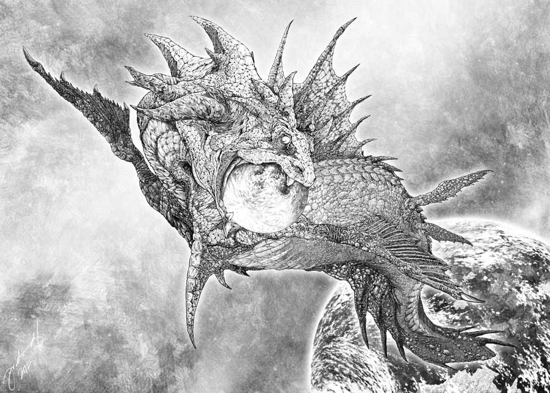

THE BAKUNAWA
The Bakunawa, also spelled Bakonawa, Baconaua, or Bakonaua, is a dragon
in Philippine mythology that is often represented as a gigantic sea serpent. It is believed to be the cause of eclipses.
It appears as a giant sea serpent with a mouth the size of a lake, a red tongue, whiskers, gills, small wires at its sides, and two
sets of wings, one is large and ash-gray while the other is small and is found further down its body.
The Visayan (Cebuano) term bakunawa is the direct translation of the word 'eclipse'.
Binakunawa is a verb to mean "to cause an eclipse".
Mythology
Tales about the Bakunawa say that it is the cause of eclipses. During ancient times, Filipinos believe that there are seven moons created by Bathala to light up the sky. The Bakunawa, amazed by their beauty, would rise from the ocean and swallow the moons whole, angering Bathala and causing them to be mortal enemies.
To keep the moons from completely being swallowed by the Bakunawa, ancient Filipinos would go out of their homes with pans and pots, and would make noise in order to scare the Bakunawa into spitting out the moon back into the sky. Some of the people in the villages would play soothing sounds with their musical instruments, in hopes that the dragon would fall into a deep sleep. Thus, the brave men of the village hoped that while the dragon was hypnotized by the musical sounds they could somehow slay the dragon. Although the dragon was known as a "moon eater" it was also known as a "man eater".
Other tales tell that the Bakunawa has a sister in the form of a sea turtle. The sea turtle would visit a certain island in the Philippines in order to lay its eggs. However, locals soon discovered that every time the sea turtle went to shore, the water seemed to follow her, thus reducing the island's size. Worried that their island would eventually disappear, the locals killed the sea turtle.
When the Bakunawa found out about this, it arose from the sea and ate the moon. The people were afraid so they prayed to Bathala to punish the creature. Bathala refused but instead told them to bang some pots and pans in order to disturb the serpent. The moon is then regurgitated while the Bakunawa disappeared, never to be seen again.
The island where the sea turtle lays its eggs is said to exist today. Some sources say that the island might just be one of the Turtle Islands.
Others tell how the Bakunawa fell in love with a human girl in one of the native tribes. The head of the tribe found out about their affair and had their house burned to ashes. The Bakunawa, finding out about this, became immersed in anger and tried to take revenge by eating all the 7 moons. When the Bakunawa was about to eat the last one, Bathala took action and punished the Bakunawa by banishing it from its home away from the sea. It also tells that the reason of the eclipses is how the Bakunawa is trying to come back to its home and deceased family.
Some Filipino elders Bakunawa is a moving isle with communities mounted at the back, it is said to believe that has 2 classification the flying Bakunawa and the land Bakunawa.